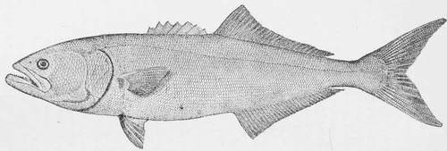

The Blue-Fish. Part 2
Description
This section is from the book "American Game Fishes", by W. A. Perry. Also available from Amazon: American Game Fishes: Their Habits, Habitat, and Peculiarities; How, When, and Where to Angle for Them.
The Blue-Fish. Part 2
"As already referred to, it must also be borne in mind that it is not merely the small fry that are thus devoured, and which it is expected will fall a prey to other animals, but that the food of the Blue-fish consists very largely of individuals which have already passed a large percentage of the chances against their attaining maturity, many of them indeed having arrived at the period of spawning. To make the case more clear, let us realize for a moment the number of Blue-fish that exist on our coast in the summer season. As far as I can ascertain by the statistics obtained at the fishing stations on the New England coast as also from the records of the New York markets, kindly furnished by Middleton and Carman of the Fulton Market, the capture of Blue-fish, from New Jersey to Monomoy, during the season, amounts to not less than one million individuals, averaging five or six pounds each. Those, however, who have seen the Blue-fish in his native waters, and realized the immense number there existing, will be quite willing to admit that probably not one fish in a thousand is ever taken by man.
"If, therefore, we have an actual capture of one million, we may allow one thousand millions as occurring in the extent of our coasts referred to, even neglecting the smaller ones, which, perhaps, should also be taken into the account.
"An allowance of ten fish per day to each Blue-fish is not excessive, according to the testimony elicited from the fishermen and substantiated by the stomachs of those examined; this gives ten thousand millions of fish destroyed per day. And as the period of the stay of the Blue-fish on the New England coast is at least one hundred and twenty days, we have in round numbers twelve hundred million millions fish devoured in the course of a season. Again, if each Blue-fish, averaging five pounds, devours or destroys even half its own weight of other fish per day (and I am not sure that the estimate of some witnesses of twice this weight is not more nearly correct), we will have, during the same period, a daily loss of twenty-five hundred million pounds, equal to three hundred thousand millions for the season.
"This estimate applies to three or four year old fish, of at least three to five pounds weight. We must however, allow for those of smaller size, and a hundred-fold or more in number, all engaged simultaneously in the butchery referred to.
"We can scarcely conceive of a number so vast; and however much we may diminish, within reason, the estimate of the number of Blue-fish and the average of their captures, there still remains an appalling aggregate of destruction. While the smallest Blue-fish feed upon the diminutive fry, those of which we have taken account capture fish of large size, many of them if not capable of reproduction, being within at least one or two years of that period.
"It is estimated by very good authority that of the spawn deposited by any fish at a given time not more than thirty per cent, are hatched, and that less than ten per cent, attain an age when they are able to take care of themselves. As their age increases, the chances of reaching maturity becomes greater and greater. It is among the small residuum of this class that the agency of the Blue-fish is exercised, and whatever reasonable deduction may be made in our estimate, we cannot doubt that they exert a material influence.
"The rate of growth of the Blue-fish is also an evidence of the immense amount of food they must consume. The young fish which appear along the shores of Vineyard Sound, about the middle of August, are about five inches in length. By the beginning of September, however, they have reached six or seven inches, and on their reappearance in the second year they measure about twelve or fifteen inches. After this they increase in a still more rapid ratio. A fish which passes eastward from Vineyard Sound in the spring, weighing five pounds, is represented, according to the general impression, by the ten to fifteen pound fish of the autumn. If this be the fact, the fish of three or four pounds which pass along the coast of North Carolina in March return to it in October weighing ten to fifteen pounds.
"As already explained, the relationship of these fish to the other inhabitants of the sea is that of an unmitigated butcher; and it is able to contend successfully with any other species not superior to itself in size. It is not known whether an entire school ever unite in an attack upon a particular object of prey, as is said to be the case with the ferocious fishes of the South American rivers; should they do so, no animal, however large, could withstand their onslaught.
"They appear to eat anything that swims of suitable size- fish of all kinds, but perhaps more especially the Menhaden, which they seem to follow along the coast, and which they attack with such ferocity as to drive them on the shore, where they are sometimes piled up in windrows to the depth of a foot or more.
"The amount of food they destroy, even if the whole of it be not actually consumed, is almost incredible. Mr. Westgate and others estimate it at twice the weight of the fish in a day, and this is perhaps quite reasonable. Capt. Spindle goes so far as to say that it will destroy a thousand fish in a day. This gentleman is also of the opinion that they do much more harm to the fishes of the coast than is caused by the pounds. They will generally swallow a fish of a very large size in proportion to their own, sometimes taking it down bodily; at others, only the posterior half. The peculiar armor of certain fish prevents their being taken entire; and it is not uncommon to find the head of a sculpin, or other fish, whose body has evidently been cut off by the Blue-fish. In the summertime the young are quite apt to establish themselves singly in a favorite locality, and, indeed, to accompany the fry of other fishes usually playing below them, and every now and then darting upward and capturing an unlucky individual, while the rest dash away in every direction. In this manner they attend upon the young Mullet, Atherinas, etc. They are very fond of squid, which may very frequently be detected in their stomachs. In August, 1870, about Fire Island, Mr. S. I. Smith found their stomachs filled with marine worms, a species of Heteronereis, which, though usually burrowing in the mud, at that season swims freely toward the surface in connection with the operation of reproduction. This, like the squid, is a favorite bait for the Blue-fish; and they appear to care for little else when these are to be had. This fact probably explains the reason why, at certain seasons, no matter how abundant the fish may be, they cannot be taken with the drail or squid boat."
Blue-Fish. Pomatomus Saltalrix.
Continue to: